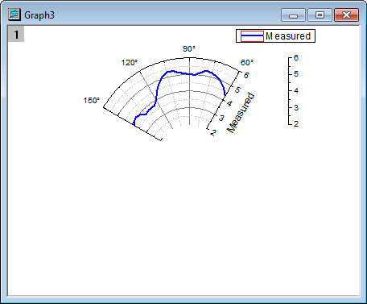
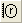

複数のレイヤを持つ極座標グラフ
極座標-複数レイヤ
概要
複数レイヤグラフにより、1つのグラフページに異なる範囲を持ついくつかの極座標グラフの配置が可能です。このグラフは、3つの独立した極座標グラフから作成され、グラフ統合の機能によりこれらを組み合わせ、3つのレイヤをもつグラフとして作成されました。

必要なOriginのバージョン: Origin 2015 SR0以降
学習する項目
このチュートリアルでは、以下の項目について解説します。
- 方位軸と放射軸を編集する
- 新しいデータを用いてグラフを複製する
- 複数レイヤ極座標グラフを作成する
- すべてのページで1つの凡例を作成する
ステップ
このチュートリアルは、Tutorial Data.opjファイルの< Origin EXE Folder >\Samples\パスに関連付けられています。
測定データで極座標グラフを作成する
- チュートリアルデータを開き、Polar Graph with Multiple Layersフォルダを開きます。Book26をダブルクリックして、ワークブックウィンドウを開きます。
- 列AとBを選択して、作図：特殊グラフ：θ(X)r(Y)極座標グラフを選択します。
- 角度軸の軸上でダブルクリックして、ダイアログを開きます。角度軸のスケールタブに移動します。 スケールの単位定義で、開始を60、終了を150と設定します。主目盛の値を30とします。 適用ボタンをクリックして、グラフに変更を適用させます。
- 目盛ラベルタブに移動し、左パネルで「角度 - 外部」を選択します。表示サブタブの下にあるラベル接尾語テキストボックスに \(176)と入力して、角度軸ラベルに「° 」を表示します。サポートされているテキストフォーマットコマンドの詳細については、エスケープシーケンスのページを参照してください。
- 放射軸設定ボタンをクリックして放射軸設定ダイアログを開きます。
- 極座標図内の軸にチェックを付け、以下のように設定します。
- 角度リストをカスタムにします。
- 60と150度の場所に軸を配置するために、値に60 150と入力します。
- 極座標図外の軸のオプションは以下のように設定します。
- 右のオプションを上部にして、レイヤ枠の右上に軸を配置します。
- ％の半径を0にします。

OKをクリックして、適用させます。
- スケールタブに移動し、左パネルで放射を選択します。放射軸スケールの開始を2にし、終了を6に変更します。主目盛の増分の値を1にセットします。
- 目盛りラベルタブに移動し、左パネルで「放射 - 内側の軸2」を選択します。表示のチェックを外して、この軸の目盛ラベルを非表示にします。
- タイトルタブに移動し、左側のパネルで「放射 - 外部軸1」を選択します。表示のチェックを外して、この軸の目盛ラベルを非表示にします。OKボタンをクリックします。
- グラフをダブルクリックして、作図の詳細ダイアログを開きます。作図の詳細ダイアログの左パネルで、Graphnをクリックします。凡例/タイトルタブで、アクティブデータセットの標識のチェックを外して、凡例シンボルの周囲の赤いボックスを非表示にします。
- 左パネルでレイヤレベルを拡張し、プロットデータを選択します。グラフの線タブを開き、太さを4に設定して、色を青に変更します。
- OKボタンをクリックして、編集内容を最初の極座標グラフに適用します。
- 
計算データで極座標グラフを複製する
- 極座標グラフのタイトルバー上で右クリックし、コンテキストメニューを開きます。バッチ作図を選択して列を選択ダイアログを開きます。バッチ作図するデータドロップダウンリストから列を選択します。C:Calculatedを選択してOKボタンをクリックし、列Cのデータを使用した極座標グラフを作図します。
- 列Bと列Cのデータを大きく異なるので、確認メッセージが表示され、全てのデータが表示されるように軸を再スケールするか聞かれます。はいのラジオボタンが選択された状態のまま、OKをクリックします。
- 最後のセクションのステップ3に従って、角度軸のスケールを設定します。スケールページを開き、開始を240、終了を360にして主目盛の増分の値を15にします。
- スケールタブで、左パネルから放射を選択し、開始を2、終了を6にして、主目盛の値を1にします。
- 表示タブを開きます。
- 左パネルから放射-内部1を選びます。軸位置セクションで、値 (角度) を 240と入力し、最初の内側極軸を240度にします。
- 左パネルから放射-内部2を選びます。値(度)を360に設定します。
- 左パネルから放射-外部3を選びます。軸位置の軸ドロップダウンリストで左下を選択して、外側の軸をレイヤ枠の左下に移動します。
OKボタンをクリックし、適用させます。
- グラフをダブルクリックして、作図の詳細ダイアログを開きます。グラフの線タブで、線の色を赤、幅を4に変更します。OKをクリックします。
全範囲グリッドを表示するために極座標グラフを作成
- ワークブックBook26をアクティブにします。
- 列Dを選択して、2Dグラフギャラリーツールバーにある、θ(X)r(Y)極座標グラフボタンをクリックして空のグラフを作成します。
- 測定データで極座標グラフを作成するセクションで行った3～6のステップと同様に、方位軸のスケールを開始を0、終了を360にし、主目盛の増分の値を30にします。
- 表示タブに移動し、左のパネルで角度 - 外部を選択し、表示のチェックを外します。次に、左側のパネルで角度-内部を選択し、表示にチェックします。
- 目盛ラベルタブに移動し、左側のパネルで角度 - 内部を選択し 表示チェックボックスをオフにして内側の角度軸の目盛ラベルを非表示にします。
- グリッド線タブに移動し、左側のパネルで角度が選択されていることを確認します。主グリッド線と副グリッド線の表示チェックボックスをオフにします。
- スケールタブに移動して左側のパネルで放射を選択し、開始を2、終了を6とします。主目盛の値は1とします。
- 表示タブに移動し、放射 - 外部1を選択し、すべての放射軸に同じオプションを使用にチェックします。これにより、このページの設定が放射 - 外部2にも適用されます。表示チェックボックスをオフにします。OKボタンをクリックします。
1つの凡例付きの複数レイヤグラフを作成する
- グラフウィンドウをアクティブにして、メニューから、グラフ操作：グラフウィンドウの統合を選択します。
- 統合オプションを指定にし、グラフテキストボックスの中を、作成した3つのグラフ（Graph1、Graph2、Graph3）だけにします。
- 配置の設定セクションの行の数、列の数をともに1に設定し、全てのグラフを重ねます。
- レイヤリンクにチェックを付けます。
- ページ設定セクションでは、幅と高さを15に設定します。
- 右パネルに、グラフのプレビューが表示されます。
- 他の設定はデフォルトのまま、OKをクリックします。
- 凡例上で右クリックして、ショートカットメニューから凡例：凡例を更新と選択してダイアログを開きます。
- 更新モードを再構築にし、新しい凡例を作成します。
- 凡例の全てのページ用の1つの凡例を選択して、複数レイヤグラフに対する1つの凡例を作成します。
- レイヤ順序を降順に変更します。これにより、レイヤ2の凡例がレイヤ1の凡例の上にきます。
- 凡例の起動更新モードを@LA:ロングネームにして、凡例にロングネームを表示します。OKをクリックします。
- 作成された凡例上で右クリックし、オブジェクトの表示属性を選択してダイアログを開きます。
- 下のテキストボックスの最初の線を削除します。
- フレームタブを開き、フレームをなしに設定します。OKをクリックします。
- 凡例をドラッグして、方位軸の内部に移動します。
- このグラフのフォントサイズを変更するために、フォントサイズテキストボックスを使用します。目盛ラベルをドラッグして、適当な場所に移動します。
- 内部の放射軸タイトル(Calculated または Measured) を右クリックして、コンテキストメニューからオブジェクトの表示属性を選択します。
- 開いたオブジェクトプロパティダイアログのフレームタブで、フレームのドロップダウンリストからなしを選択します。タイトルの背景部分を白地にします。OKをクリックします。
- 同じ操作で、もう一方のタイトルの背景も白地にします。
- 最終的に、下図のようなグラフになります。